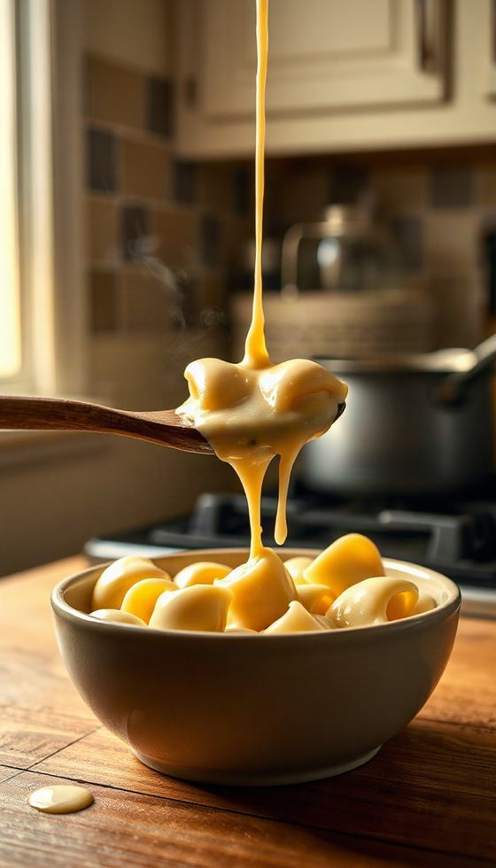
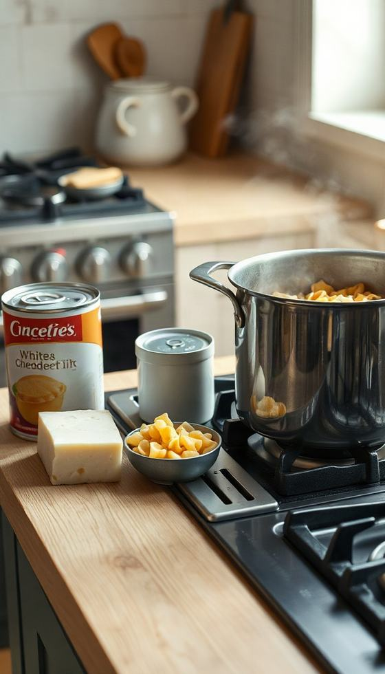
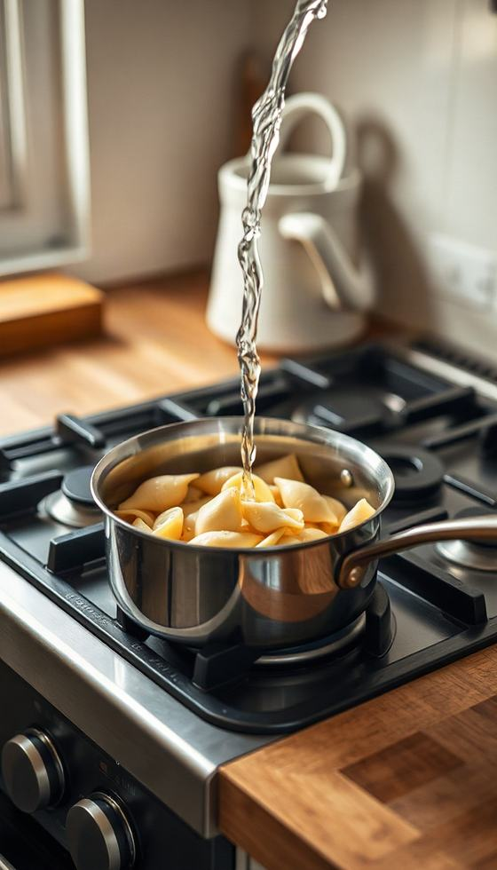
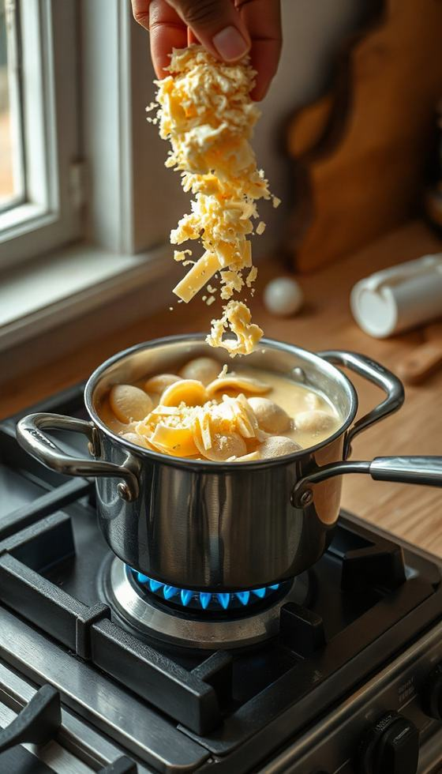
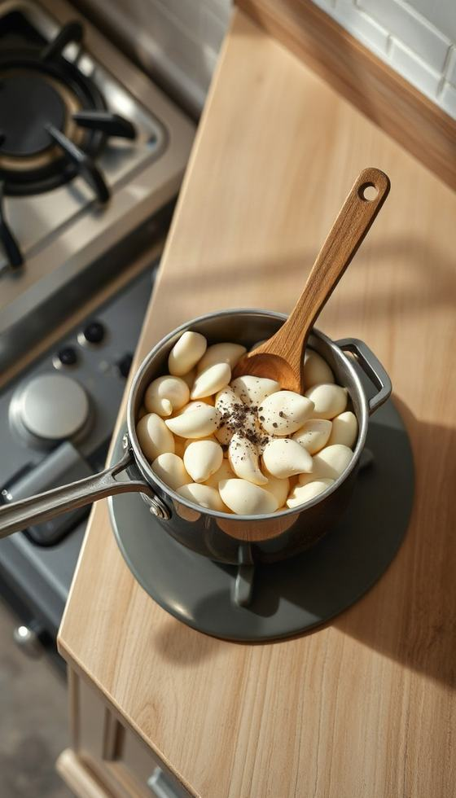

Rate This Hack
Copycat Panera Mac & Cheese
About $4.11* · 2 servings · 15 min
*Prices are estimates and may differ from what you pay. How we price recipes
Copycat Panera mac & cheese with NO flour, NO butter, NO roux. One pot, 15 minutes, $2.06 a bowl. I tried to break the sauce and it stayed glossy. Score: 9/10.





Ingredients
- 170 g (6 oz) medium pasta shells
- About 500 mL (2 cups) cold water, enough to just cover the pasta
- 1/2 tsp salt
- 170 mL (about 3/4 cup, half a 354 mL can) evaporated milk
- 170 g (6 oz) old white cheddar, grated from the block (about 2 cups loosely packed)
- 1/2 tsp Dijon mustard
- 3-4 dashes hot sauce
- Black pepper to taste
Steps
- Grate the cheddar off the block and set it aside. Measure out the evaporated milk.
- Put the shells in a small saucepan with the salt. Add cold water just until the pasta is barely covered, about 500 mL (2 cups).
- Bring to a boil over high heat, then lower to medium-high. Stir every 30 seconds so the shells don't stick, about 7-9 minutes, until the pasta is al dente and nearly all the water is absorbed. Leave about 2-3 tablespoons of starchy liquid in the pot. If it runs dry before the pasta is tender, add a splash of water.
- Pour in the evaporated milk and bring it to a bare simmer, about 1 minute.
- Turn the heat to low. Add the cheese a handful at a time, stirring constantly until each handful melts, about 1-2 minutes total. Don't let it boil once the cheese is in.
- Off the heat, stir in the Dijon, hot sauce and black pepper. If it's thick, loosen it with a splash of evaporated milk or water. Rest 1 minute so the sauce clings, then serve right away.
What you'll need
Gear links go to Amazon (Amazon.ca, or Amazon.com in the US). As an Amazon Associate I earn from qualifying purchases, at no extra cost to you.
Watch the videoMore $5 recipes
About the prices: they're estimates, not quotes. Since Nov 2026 they're based on Statistics Canada's monthly average retail prices where an item is listed (Open Government Licence - Canada), otherwise on typical Canadian grocery prices, and count only the amount of each ingredient used, not whole packages. What you pay will vary by store, location, brand, sales, taxes and date, and any pantry staples you need to buy will add to it. Recipe visuals and narration are AI-generated.